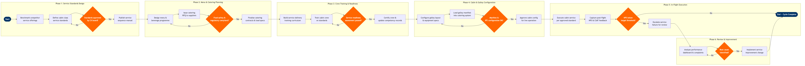

| Step | L4 Step Name | KPI / Target | Pain Point / Risk | Gate |
|---|---|---|---|---|
| 1.1 | Benchmark competitor in-flight service offerings | Benchmark coverage ≥10 direct competitors; report issued within 15 working days of cycle start | OAG data lacks cabin-class service detail; manual research from APEX/IFSA industry reports required, creating a 2–3 week lag in intelligence | |
| 1.2 | Define cabin class service standards & sequences | Standards documented for 100% of cabin classes within 20 working days | No dedicated service-design tooling — standards authored in Confluence with no version-controlled approval workflow, leading to unapproved drafts reaching crew training | |
| 1.3 | Obtain CX board approval for service standards | Board approval cycle ≤10 working days; zero unapproved standards in production | Multi-stakeholder approval (Inflight, Safety, Commercial, Legal) causes average 18-day delay; no SLA enforcement in ServiceNow CAB workflow | ⚠ |
| 1.4 | Publish service sequence manual to crew portal | 100% of active cabin crew acknowledge new manual within 5 days of publication | FliteDeck acknowledgement tracking is available for pilot documents but EFB access for cabin crew varies by aircraft type, requiring parallel paper distribution on older fleets | |
| 2.1 | Design seasonal menu & beverage programme | Menu refresh cycle ≤90 days; SPML coverage ≥18 dietary codes per IATA standard | Altéa PSS SPML data completeness averages 62% — many passengers select meal preferences at airport rather than booking, causing last-minute galley shortfalls on long-haul sectors | |
| 2.2 | Issue catering RFQ and evaluate supplier bids | RFQ response rate ≥80%; bid evaluation completed within 15 working days | SAP Ariba supplier onboarding for new catering vendors averages 30 days due to food safety certification upload requirements; limits ability to switch suppliers for disrupted routes | |
| 2.3 | Validate food safety and regulatory compliance | Zero non-compliant meals reaching aircraft; compliance review completed ≤10 working days | Vary-by-country food import regulations (e.g. USDA restrictions, EU novel food rules) cause compliance hold-ups averaging 8 days per new ingredient, delaying menu finalisation | ⚠ |
| 2.4 | Finalise catering contracts and upload load plans | Contract executed ≥21 days before menu effective date; load plan accuracy ≥98% vs actual uplift | Gate Gourmet CateringIT portal API integration with Amadeus Altéa PSS pax counts is batch-based (T-24h), not real-time — load plans cannot adjust dynamically for last-minute booking surges | |
| 3.1 | Build service delivery training curriculum | Curriculum published ≥14 days before crew training cohort start; ≥90% module completion rate per cohort | Cornerstone LMS integration with Jeppesen crew rostering is one-way — training completion status does not auto-block scheduling of uncertified crew, requiring manual cross-checks | |
| 3.2 | Deliver in-flight service standards training to crew | Training completion ≥95% of active crew 7 days before go-live; practical assessment pass rate ≥88% | Simulator availability is constrained by shared scheduling with safety/emergency training (SEP); service training often deferred to on-aircraft familiarisation flights, increasing variability | |
| 3.3 | Conduct service readiness assessment and certify crew | 100% of operating crew certified before standard go-live; re-assessment cycle ≤5 days for failures | Manual update of qualification flags in Jeppesen after Cornerstone certification creates a 24–48h lag; uncertified crew can be legally rostered during the gap if not caught by manual audit | ⚠ |
| 4.1 | Configure galley layout and equipment specifications | Configuration records updated for 100% of affected fleet tails ≥10 days before service go-live | Fleet heterogeneity (B737-800 vs B737 MAX 8 vs B737-700 galley volumes differ by 8–12%) means single load plan cannot be applied uniformly, requiring per-subfleet configuration variants | |
| 4.2 | Load galley manifest into catering management system | Manifest upload completed ≥48h before first operated flight; uplift accuracy target ≥98% | Amadeus SkyWORKS schedule changes (re-routes, aircraft swaps) are not automatically propagated to Gate Gourmet CateringIT — manual re-upload required within 2h of change notification to avoid mismatched uplift | |
| 4.3 | Validate IFE content load and seat configuration | IFE content load verified on 100% of IFE-equipped tails ≥5 days before service period; zero safety video version mismatches | Panasonic eX3 content load requires physical ground time per aircraft and cannot be pushed OTA to older eX1 installations; schedule compression means some tails miss the update window and carry previous season content | ⚠ |
| 5.1 | Execute in-flight service per approved standard | Service sequence adherence ≥95% per audited flights; galley shortfall rate <2% of flights | No real-time digital cabin service tracking — adherence is measured through periodic audits only (sample <5% of flights), creating a large blind spot between audit cycles | |
| 5.2 | Capture post-flight NPS and CSAT feedback | Survey response rate ≥18%; NPS target ≥45 for short-haul; ≥55 for long-haul | Altéa PSS email suppression rules (opt-out, GDPR, corporate booking via Sabre GDS without passenger email) reduce survey reach by ~35%, skewing NPS samples toward direct-channel passengers | ⚠ |
| 6.1 | Analyse service performance metrics and complaints | Dashboard published within 5 working days of month-end; complaint resolution rate ≥90% within SLA | Medallia, ServiceNow, and Altéa data are held in separate systems with no automated ETL pipeline; Power BI refresh depends on manual CSV exports from Medallia, introducing 2–3 day data staleness | |
| 6.2 | Identify root cause and implement service improvements | Root cause identified within 10 working days of threshold breach; improvement implemented within 30 days of approval | Continuous improvement cycle lacks a formal feedback loop into Cornerstone LMS — identified training gaps require manual curriculum update requests, averaging 6-week lag before crew retraining is delivered | ⚠ |